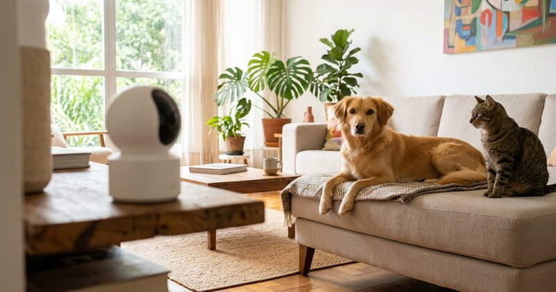
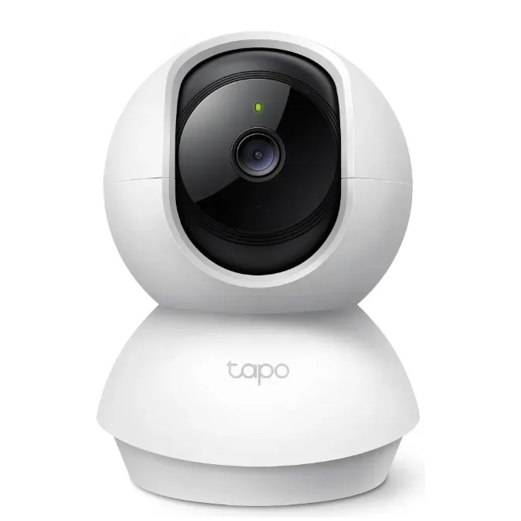
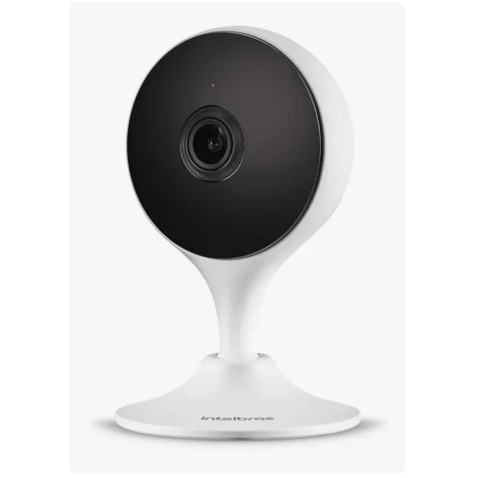
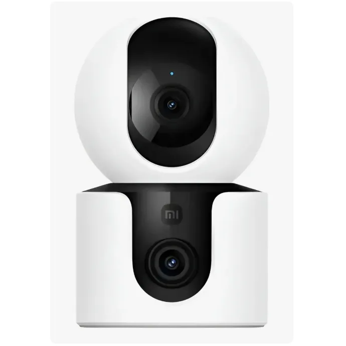
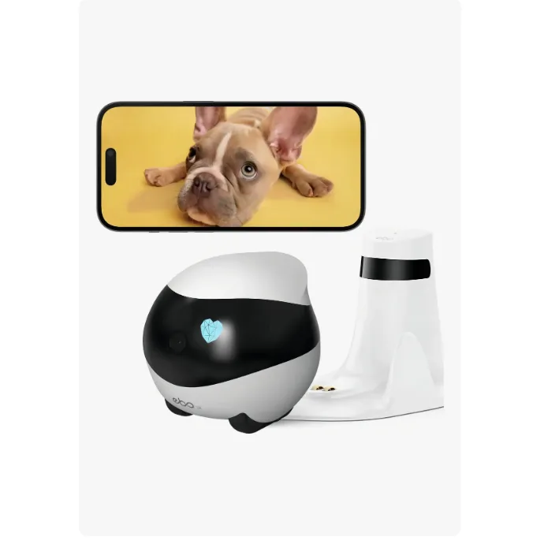

Câmera para Monitorar Pet: 6 Melhores Modelos de 2026 para Cão e Gato
Publicado em 22 de agosto de 2026 · Atualizado em 17 de novembro de 2026 · Por Nildo Alves, curadoria de produtos pet no Smart Pet Gadgets · Leitura: 14 min

Ilustração: câmera Wi-Fi na sala monitorando o cachorro e o gato.
A melhor câmera para monitorar pet, para a maioria dos tutores, é a TP-Link Tapo C200: imagem Full HD, giro de 360° pelo app, visão noturna de até 9 metros e conversa por voz nos dois sentidos, com nota 4,9 em mais de 48 mil avaliações e 2 anos de garantia, por R$ 111 no Pix no Mercado Livre (preço de 17/11/2026). Quem quer imagem mais nítida deve escolher a Tapo C210, a versão 2K, por R$ 142,42. Se você não quer ficar girando a câmera atrás do pet, a Intelbras iM4 C segue o movimento sozinha. E para interagir de verdade, o robô Enabot EBO Air anda pela casa atrás do cachorro ou do gato.
TP-Link Tapo C200, loja oficial TP-Link: Full HD, giro de 360° e nota 4,9 em 48 mil avaliações.Link de afiliado — sem custo extra para você.
Os seis modelos comparados, em imagens dos anúncios no Mercado Livre.
As 6 Melhores Câmeras para Monitorar Pet de 2026
Os dados de cada modelo vêm do anúncio no Mercado Livre e das avaliações publicadas por compradores. Não testamos as câmeras; veja como escolhemos.
#1 — Melhor câmera para monitorar pet
TP-Link Tapo C200 Câmera de Segurança Wi-Fi 1080p 360°
Imagem do anúncio da loja oficial TP-Link no Mercado Livre.
É a câmera mais vendida e mais bem avaliada da lista, e a mais barata hoje no Pix. A cabeça gira 360° na horizontal e inclina 114° na vertical pelo app Tapo, então uma câmera só cobre a sala inteira. A imagem é Full HD, a visão noturna alcança 9 metros e o áudio bidirecional permite chamar o cachorro ou o gato pelo celular. Tem alerta de movimento, alarme sonoro e modo de privacidade, que fecha a lente quando você está em casa. Grava em cartão microSD, sem mensalidade.
Preço
R$ 111 no Pix ou R$ 148 em 4x sem juros
Câmera
Full HD 1080p, giro de 360° e inclinação de 114°, visão noturna de até 9 m
Recursos
Áudio bidirecional, alerta de movimento no celular, alarme sonoro, modo de privacidade
Gravação
Cartão microSD (vendido à parte); nuvem opcional por assinatura (Tapo Care)
Conectividade
Wi-Fi 2,4 GHz, app Tapo
Avaliações
4,9 de 5 em 48.706 avaliações; +100 mil vendidos
Vendedor e garantia
Loja oficial TP-Link (MercadoLíder Platinum, +1 milhão de vendas); 2 anos de garantia de fábrica
O resumo das opiniões do Mercado Livre diz que a câmera tem "visão noturna eficaz e um aplicativo intuitivo, ideal para monitoramento, inclusive de pets". Entre os comentários mais votados há vários de tutores:
"Originalmente comprei para verificar se meus gatos comiam enquanto eu não estava em casa, mas graças à câmera pude perceber que havia um rato..."
★★★★★ comprador do México, avaliação traduzida pelo Mercado Livre · 291 pessoas acharam útil
"Comprei para vigiar meu cachorrinho enquanto estou no trabalho e gostei muito da qualidade da imagem. Fácil de instalar..."
★★★★★ comprador do México, avaliação traduzida pelo Mercado Livre · 239 pessoas acharam útil
Prós
Nota 4,9 em quase 49 mil avaliações
Giro de 360°, uma câmera cobre o cômodo
2 anos de garantia na loja oficial
Modo de privacidade e gravação sem mensalidade
Contras
Full HD, abaixo da C210 e da Xiaomi
Só Wi-Fi 2,4 GHz
Cartão microSD não vem na caixa
🐾 TP-Link Tapo C200, a câmera mais bem avaliada da lista: veja o preço de hoje.
Link de afiliado: podemos receber uma comissão por compras feitas através deste link, sem custo adicional para você.
#2 — Melhor imagem pelo preço
TP-Link Tapo C210 Câmera Wi-Fi Interna 2K 3MP 360°

Imagem do anúncio da loja oficial TP-Link no Mercado Livre.
Por fora é igual à C200, mas a imagem sobe para 2K (3 megapixels). A diferença aparece quando você dá zoom para ver se o pet comeu, o que ele está mordendo ou se o gato está no alto do armário. Também gira 360°, tem visão noturna de 9 metros e áudio bidirecional, e o app avisa quando detecta choro, recurso pensado para bebê que também alerta para um cachorro que chora. Aceita cartão microSD de até 512 GB. Para entender quando a resolução maior faz diferença, veja câmera pet 1080p x 2K.
Preço
R$ 142,42 no Pix (oferta relâmpago) ou R$ 189,90 em 6x sem juros
Câmera
2K 3 MP, giro de 360°, visão noturna de até 9 m
Recursos
Áudio bidirecional, detecção de movimento e de choro, alertas no celular
Gravação
Cartão microSD de até 512 GB (vendido à parte); nuvem opcional por assinatura
Conectividade
Wi-Fi 2,4 GHz, criptografia AES de 128 bits, app Tapo
Avaliações
4,9 de 5 em 7.890 avaliações; +10 mil vendidos
Vendedor
Loja oficial TP-Link (MercadoLíder Platinum)
"Câmera excelente, qualidade da imagem é ótima. Com cartão de 64gb pode pôr em fullhd que ela filma uns 4 dias, se pôr em hd 720 filma mais dias, uns 7."
★★★★★ comprador, Mercado Livre · 52 pessoas acharam útil
Um comprador argentino fez a ressalva oposta: achou pouca diferença entre os 2K e o Full HD e lembrou que o cartão microSD custa quase metade da câmera. Se o cômodo é pequeno, a C200 resolve.
Prós
Imagem 2K, melhor para zoom
Cartão de até 512 GB
Alerta de choro e de movimento
Loja oficial, nota 4,9
Contras
Custa mais que a C200 por uma diferença que nem todo mundo nota
2K enche o cartão mais rápido
Garantia não aparece no anúncio
🔍 TP-Link Tapo C210 2K, para ver o pet com mais detalhe: veja o preço de hoje.
Link de afiliado: podemos receber uma comissão por compras feitas através deste link, sem custo adicional para você.
#3 — Segue o pet sozinha
Câmera Inteligente Visão 360° iM4 C Intelbras
Imagem do anúncio no Mercado Livre.
O diferencial é o rastreamento automático: quando detecta movimento, a câmera gira sozinha e acompanha o pet pelo cômodo, sem você precisar mexer no app. Gira 355° na horizontal e de -5° a 80° na vertical, grava em Full HD e o infravermelho alcança 10 metros, o maior da lista. É de marca nacional, com suporte em português, usa o app Mibo Smart e funciona com Alexa e Google. A caixa traz fonte bivolt, cabo e suporte de fixação.
Preço
R$ 186,75 no Pix ou R$ 249 em 6x sem juros (R$ 171,75 com cupom)
Câmera
Full HD 1080p, giro de 355° e inclinação de -5° a 80°, zoom digital de 8x, infravermelho de 10 m
Recursos
Rastreamento automático, alerta de movimento, áudio bidirecional, Alexa e Google
Gravação
Cartão microSD de até 256 GB (vendido à parte)
Conectividade
Wi-Fi 2,4 GHz, app Mibo Smart
Avaliações
4,9 de 5 em 16.946 avaliações; +100 mil vendidos
Vendedor
Loja oficial Mercado Livre (+1 milhão de vendas)
O resumo das opiniões cita "visão noturna impressionante" e instalação simples.
"Excelente imagem. Mesmo no modo econômico apresenta boa imagem. Imagem noturna muito nítida."
★★★★★ comprador, Mercado Livre · 217 pessoas acharam útil
"Fácil de instalar. Discreta, não precisa furar paredes. O que eu gostei mais: 1) notifica você quando detecta movimento. 2) grava a movimentação no SD e daí você pode acessar remotamente..."
★★★★★ comprador, Mercado Livre · 64 pessoas acharam útil
Prós
Segue o pet sozinha
Infravermelho de 10 m
Marca nacional, Alexa e Google
Fonte e suporte inclusos
Contras
A mais cara das câmeras comuns da lista
Full HD, sem opção 2K
Cartão de no máximo 256 GB
🐕 Intelbras iM4 C, a câmera que acompanha o pet sozinha: veja o preço de hoje.
Link de afiliado: podemos receber uma comissão por compras feitas através deste link, sem custo adicional para você.
#4 — Fixa e discreta para um cômodo
Câmera de Segurança Inteligente Intelbras iM3 C Branca

Imagem do anúncio no Mercado Livre.
Não gira: fica apontada para um ponto, com ângulo de 112° na horizontal (131° na diagonal). Funciona bem para vigiar um lugar específico, como o canto da caminha, o comedouro ou a área de serviço onde o cachorro fica. É pequena (102,7 g), grava em Full HD, tem infravermelho de 10 metros e zoom digital de 16x, e funciona com Alexa e Google. É a mais vendida da lista no Mercado Livre e tem 12 meses de garantia de fábrica.
Preço
R$ 128,15 no Pix ou R$ 170,87 em 5x sem juros
Câmera
Full HD 1080p fixa, ângulo de 112° na horizontal, zoom digital de 16x, infravermelho de 10 m
Recursos
Alerta de movimento, áudio bidirecional, Alexa e Google
Gravação
Cartão microSD de até 256 GB (vendido à parte)
Medidas e peso
6,6 x 3,3 x 10,9 cm; 102,7 g
Avaliações
4,9 de 5 em 16.478 avaliações; +250 mil vendidos
Vendedor e garantia
Loja oficial Mercado Livre (também vendida pela loja oficial Intelbras); 12 meses de garantia de fábrica
"Produto muito bom, valeu super a pena, imagem limpinha, deveria ter comprado antes!"
★★★★★ comprador, Mercado Livre · 203 pessoas acharam útil
"Condiz com o que diz na descrição, muito fácil de instalar, nem precisa furar a parede, o aplicativo é super fácil de usar e configurar..."
★★★★★ comprador, Mercado Livre · 88 pessoas acharam útil
Prós
Mais de 250 mil vendidas, nota 4,9
Pequena e discreta
Zoom digital de 16x
12 meses de garantia
Contras
Não gira: o pet sai do quadro
Leve, um gato derruba se ficar solta no móvel
Cartão não incluso
📷 Intelbras iM3 C, a câmera fixa mais vendida: veja o preço de hoje.
Link de afiliado: podemos receber uma comissão por compras feitas através deste link, sem custo adicional para você.
#5 — Duas lentes, dois ângulos ao mesmo tempo
Câmera de Segurança Xiaomi Smart C300 Dual 2K 3MP Wi-Fi

Imagem do anúncio no Mercado Livre.
Tem duas lentes de 3 MP: uma na base, fixa, e outra na cabeça motorizada. Na prática, você vê dois pontos do cômodo ao mesmo tempo, por exemplo a porta e o sofá, sem precisar girar a câmera. O anúncio informa campo de visão de 360° na horizontal e 180° na vertical, visão noturna colorida e zoom digital de 4x, e a câmera pode ser presa na parede ou no teto.
Preço
R$ 349 ou 12x de R$ 34,14
Câmera
Duas lentes 2K 3 MP (uma fixa e uma motorizada), lente de 3,9 mm, visão noturna colorida, zoom digital de 4x
Instalação
Parede, teto ou superfície plana
Avaliações
4,6 de 5 em 19 avaliações; +500 vendidos; 3 unidades disponíveis em 17/11
Vendedor
ANASHOW (+500 vendas), revendedor, não loja oficial
"Câmera excelente, fácil instalação e manuseio. Ótimas imagens."
★★★★★ comprador, Mercado Livre
Prós
Duas lentes, dois ângulos ao mesmo tempo
Imagem 2K
Visão noturna colorida
Contras
Revendedor, poucas avaliações e estoque baixo
Garantia e cartão não informados no anúncio
Mais que o dobro do preço da C210
👀 Xiaomi C300 Dual, duas lentes para ver dois cantos da sala: veja o preço de hoje.
Link de afiliado: podemos receber uma comissão por compras feitas através deste link, sem custo adicional para você.
#6 — Câmera robô que anda pela casa
Enabot EBO Air Câmera Robô Wi-Fi para Pets e Bebês

Imagem do anúncio no Mercado Livre.
Não fica parado num móvel: é um robô com câmera que você dirige pelo app, de cômodo em cômodo, para encontrar o pet onde ele estiver. A inteligência artificial reconhece pessoas e animais e acompanha o movimento, o design autoequilibrado aguenta esbarrões e, com a bateria baixa, o robô volta sozinho para a base. A câmera é Full HD, com visão noturna e áudio bidirecional, e há 16 GB de armazenamento interno. Para muitos cachorros e gatos, o próprio robô vira brinquedo.
Preço
R$ 1.093,19 ou 12x de R$ 106,12
Câmera
Full HD 1080p, visão noturna, IA para rastrear pessoas e animais
Movimento
Anda pela casa pelo app, detecta obstáculos, volta sozinho à base de carregamento
Recursos
Áudio bidirecional, fotos e vídeos pelo app, 16 GB internos
Peso
282 g
Avaliações
Ainda sem avaliações neste anúncio (+5 vendidos)
Vendedor e garantia
ALPHA ECOMM (MercadoLíder Platinum, +5 mil vendas); 30 dias de garantia do vendedor
Prós
Vai até o pet em qualquer cômodo
Volta sozinho para carregar
Rastreamento por IA
Vendedor MercadoLíder Platinum
Contras
Custa quase dez vezes uma Tapo C200
Sem avaliações neste anúncio
Garantia de só 30 dias, do vendedor
Não sobe escada: cobre um andar por vez
🤖 Enabot EBO Air, a câmera robô para pets: veja o preço de hoje.
Câmera de Segurança Comum Serve para Monitorar Pet?
Serve, e é o que a maioria dos tutores usa. Cinco dos seis modelos desta lista são câmeras Wi-Fi residenciais: mostram o pet ao vivo no celular, avisam quando há movimento, gravam no cartão e permitem falar com o animal. As câmeras "para pet" acrescentam recursos específicos, como lançar petisco, laser para gato ou andar pela casa, e custam várias vezes mais. Se o objetivo é ver o pet e conversar com ele, uma câmera comum com giro e visão noturna resolve.
Câmera para Pet sem Mensalidade: Como Funciona
Nenhum modelo da lista obriga a pagar assinatura para ver ao vivo, receber alerta ou usar o áudio. A mensalidade só entra se você quiser guardar vídeos na nuvem ou usar alguns alertas inteligentes, como os do Tapo Care, da TP-Link. Para gravar de graça, compre um cartão microSD:
Tapo C210: aceita até 512 GB.
Intelbras iM3 C e iM4 C: aceitam até 256 GB.
Enabot EBO Air: já vem com 16 GB internos.
Para calcular o tamanho, use o relato do comprador da C210: um cartão de 64 GB guarda cerca de 4 dias de gravação contínua em Full HD, ou uns 7 dias em 720p. Gravar só quando há movimento faz o cartão durar bem mais.
Câmera para Pet Precisa de Internet?
Para ver ao vivo, receber notificações e falar com o pet, sim. Sem internet, a câmera continua gravando no cartão enquanto tiver energia, e você assiste às gravações quando a conexão voltar (Minha Casa Tech, consultado em 22/08/2026). Veja em detalhe o que funciona e o que não funciona sem internet.
Outro ponto: as Tapo e as Intelbras desta lista conectam só no Wi-Fi de 2,4 GHz. Se o roteador tem as redes de 2,4 e 5 GHz, escolha a de 2,4 GHz na configuração. É o erro mais comum, e o passo a passo está em como configurar a câmera pet no Wi-Fi. Para outros problemas, veja os erros comuns com câmera para monitorar pet.
Onde Instalar a Câmera para Ver o Pet
Altura: numa prateleira ou na parede, entre 1,5 m e 2 m, apontada para onde o pet passa mais tempo (caminha, sofá, comedouro). Assim ele não alcança a câmera e o giro cobre o cômodo.
Gatos: fixe a câmera com o suporte. Câmera leve solta em cima do móvel costuma ir parar no chão.
Cabo: passe o fio por trás dos móveis ou numa canaleta. Filhote que rói fio é risco de choque, não só de câmera quebrada.
Luz: evite apontar para a janela. A luz forte de fundo escurece o pet na imagem.
Visão noturna: o infravermelho reflete em vidro, então não instale atrás de janela ou porta de vidro. Saiba o que esperar em a visão noturna da câmera pet funciona?
Privacidade e Segurança da Câmera
Uma câmera Wi-Fi dentro de casa também filma você. Alguns cuidados simples:
Use uma senha forte e exclusiva na conta do app e ative a verificação em duas etapas, se o app oferecer.
Mantenha o aplicativo e o firmware da câmera atualizados.
Use o modo de privacidade (a Tapo C200 tem esse modo no app, que interrompe a imagem) ou desligue a câmera quando estiver em casa.
Prefira marcas com suporte no Brasil. A Tapo C210 informa criptografia AES de 128 bits na transmissão.
A Câmera Ajuda com Ansiedade de Separação e Latido?
Ajuda a entender, não a resolver. Muitos tutores só descobrem que o cachorro late, chora ou destrói coisas quando assistem às gravações (achados compilados por Cães e Gatos, consultado em 22/08/2026). O áudio bidirecional acalma alguns pets na hora, mas o tratamento envolve rotina, gasto de energia antes de sair, enriquecimento ambiental e, nos casos mais sérios, um veterinário comportamentalista. Veja como a câmera entra nesse plano em câmera pet para cachorro com ansiedade de separação.
E se a preocupação é o pet fugir ou se perder fora de casa, a câmera não resolve: aí entra a coleira GPS. Veja a diferença em câmera pet ou coleira GPS: qual escolher.
Como Escolhemos
Selecionamos seis câmeras no Mercado Livre em 17/11/2026 a partir dos modelos que mais aparecem nos comparativos brasileiros de câmera para pet e câmera interna, como os do mybest, e da busca por "câmera robô para pet". Para cada uma registramos preço, imagem, movimento, visão noturna, gravação, avaliações, reputação do vendedor e garantia direto no anúncio, e citamos comentários de compradores quando havia; alguns são de compradores de outros países, traduzidos pelo próprio Mercado Livre, e estão sinalizados. Não testamos as câmeras. A ordem considera, nesta sequência, o que atende a maioria dos tutores, o volume e a nota das avaliações, o vendedor e a garantia. Xiaomi C300 Dual e Enabot EBO Air ficaram no fim da lista por terem poucas ou nenhuma avaliação no anúncio.
Conclusão
Para ver o cachorro ou o gato pelo celular sem gastar muito, a TP-Link Tapo C200 é a escolha mais segura: giro de 360°, visão noturna, quase 49 mil avaliações com nota 4,9 e 2 anos de garantia. Se você vai usar o zoom ou tem uma sala grande, pague um pouco mais pela Tapo C210 2K. A Intelbras iM4 C é para quem quer que a câmera siga o pet sozinha, e a iM3 C resolve quando basta vigiar um canto. O Enabot EBO Air é um luxo divertido, para quem quer procurar e brincar com o pet pela casa. Ficou alguma dúvida? Veja as perguntas frequentes abaixo.
Perguntas Frequentes
Qual a melhor câmera para monitorar pet?
Para a maioria dos tutores, a TP-Link Tapo C200: Full HD, giro de 360°, visão noturna de até 9 metros e áudio bidirecional, com nota 4,9 em mais de 48 mil avaliações e 2 anos de garantia, por R$ 111 no Pix no Mercado Livre em 17/11/2026. Quem quer imagem mais nítida deve olhar a Tapo C210, que é 2K.
Câmera de segurança comum serve para monitorar pet?
Serve. Uma câmera Wi-Fi interna com giro, visão noturna e áudio bidirecional faz tudo o que a maioria dos tutores precisa: ver o pet ao vivo, receber alerta de movimento e falar com ele. As câmeras feitas para pet acrescentam recursos como dispensador de petisco, laser ou movimento pela casa, e custam bem mais.
Existe câmera para pet sem mensalidade?
Sim. Todos os modelos desta lista mostram a imagem ao vivo, enviam alertas e permitem falar com o pet sem assinatura. Para gravar sem mensalidade, use um cartão microSD (vendido à parte): a Tapo C210 aceita até 512 GB e as Intelbras até 256 GB. A nuvem e alguns alertas inteligentes são opcionais e pagos.
Câmera para pet precisa de internet para funcionar?
Para ver ao vivo pelo celular, receber notificações e falar com o pet, sim. Sem internet, a câmera continua gravando no cartão microSD enquanto tiver energia, e você assiste às gravações quando a conexão voltar.
Qual câmera é melhor para cachorro que fica sozinho em casa?
Uma câmera com giro de 360° e áudio bidirecional, como a Tapo C200 ou a Intelbras iM4 C, que segue o cachorro sozinha pelo cômodo. O áudio permite falar com ele, e os alertas de movimento mostram quando ele está agitado. A câmera ajuda a entender o comportamento, mas não trata a ansiedade de separação sozinha.
Qual câmera é melhor para monitorar gato?
Gatos sobem em móveis e derrubam objetos, então prefira uma câmera com giro de 360° fixada na parede ou numa prateleira alta, como a Tapo C200 ou a C210. A visão noturna também pesa, porque gatos são mais ativos à noite. A Intelbras iM3 C é leve e fixa: funciona bem presa à parede, mas fica vulnerável solta sobre um móvel.
Câmera pet funciona no Wi-Fi 5 GHz?
As Tapo e as Intelbras desta lista funcionam só em Wi-Fi 2,4 GHz. Se o roteador tem as duas redes, conecte a câmera à de 2,4 GHz. Esse é o erro mais comum na configuração.
Qual resolução de câmera pet é suficiente?
Full HD (1080p) já mostra bem o pet num cômodo comum. A resolução 2K, como a da Tapo C210 e da Xiaomi C300 Dual, ajuda em ambientes grandes e quando você usa o zoom. O custo é ocupar mais espaço no cartão: um comprador da C210 relata cerca de 4 dias de gravação em Full HD num cartão de 64 GB.
Preciso de cartão SD além do app?
Sim, se quiser guardar as gravações sem pagar a nuvem. O app mostra a imagem ao vivo, mas sem cartão (ou assinatura de nuvem) nada fica gravado. Use cartão microSD classe 10 ou UHS-1 e confira a capacidade máxima que o seu modelo aceita.
Câmera para pet resolve a ansiedade de separação do cão?
Não sozinha. Ela ajuda a identificar sinais de ansiedade, e o áudio bidirecional pode acalmar o pet no momento, mas o tratamento costuma envolver enriquecimento ambiental, gasto de energia antes de sair e, em casos mais sérios, acompanhamento de um veterinário comportamentalista.
Escrito por Nildo Alves para o Smart Pet Gadgets. Preços e especificações vêm dos anúncios no Mercado Livre em 17/11/2026 e podem mudar. Veja nossa política editorial e como verificamos as fontes citadas neste artigo.
NA
Nildo Alves — tutor de pets e curador de produtos no Smart Pet Gadgets. Pesquisa especificações de fabricante, dados de mercado e fontes veterinárias publicadas por terceiros para ajudar outros tutores a escolher melhor.